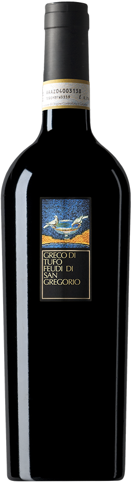

Il Greco di Tufo ha origini antichissime, risalenti
all'epoca romana. Feudi di San Gregorio ha saputo
reinterpretarlo con eleganza moderna: il vino è
profumato di fiori bianchi e frutta secca, con una
mineralità intensa. Perfetto per pesce, crostacei e
primi piatti della tradizione mediterranea.
Questo bianco campano si distingue per la sua
personalità decisa e il carattere vulcanico del
territorio da cui nasce.
La struttura è piena, ma sempre bilanciata da una
freschezza viva, che lo rende versatile a tavola e
piacevole anche dopo qualche anno di affinamento.
Un vino che unisce storia e contemporaneità in ogni
sorso.
